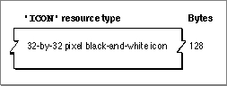

Legacy Document
Important: The information in this document is obsolete and should not be used for new development.
Important: The information in this document is obsolete and should not be used for new development.


The Icon Resource
When you want to display a 32-by-32 pixel black-and-white icon within some element of your application (such as within a menu, an alert box, or a dialog box), you can create an icon resource. An icon resource is a resource with the resource type'ICON'. All icon resources must be marked purgeable, and they must have resource IDs greater than 128.Using icon resources, you can create icons similar to the ones the Finder uses to display your application's files on the desktop; however, unlike the resource types previously described in this section, the Finder does not use or display any resources that you create of type
'ICON'. Instead, your application uses icon resources of type'ICON'to display icons from within your application. Icon resources are described here for completeness and to mitigate the confusion that sometimes arises concerning icon ('ICON') resources (which your application creates for its own use), icon list('ICN#') resources, and the other previously described resources necessary for defining an icon family (which your application creates for the Finder's use).See "Creating Icons for the Finder" beginning on page 7-10 for additional information about creating icon list resources and other resources for representing files to users.
Generally, you use icon resources in menus and dialog boxes, as described in the chapters "Menu Manager" and "Dialog Manager" in this book. If you provide a color icon (
'cicn') resource with the same resource ID as the icon resource, the Menu Manager and the Dialog Manager display the color icons instead of the black-and-white icons for users with color monitors. (For example, the color alert box in Plate 2 specifies a resource of type'cicn'for the color icon in the upper-left corner of the alert box.)An icon resource is defined to be of type
String[128]; each bit represents a pixel in the 32-by-32 pixel icon. As illustrated in Figure 7-23 on the next page, an icon resource resembles an icon list resource without the array that specifies the icon's mask. You can use a high-level tool such as the ResEdit application to create icon resources. You can then use the DeRez decompiler to convert your icon resources into Rez input when necessary.Figure 7-23 Structure of a compiled icon (
'ICON') resource